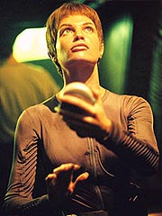
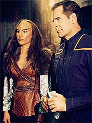
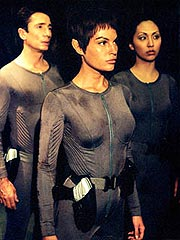
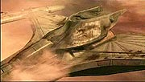

Episdio
anterior | Prximo
episdio
Sinopse:
Hoshi Sato est treinando tiro ao
alvo com uma pistola de fase na sala de armas, instruda por
Malcolm Reed, quando a Enterprise sai de dobra, para estudar um
planeta gigante gasoso classe 9, diferente de todos que existem no
Sistema Solar. Ao enviar uma sonda na atmosfera, T'Pol detecta a
presena de uma nave, perdendo altitude rapidamente.
Archer decide tentar ajudar, enviando um grupo em um shuttlepod na
tentativa de restaurar os sistemas da nave e recuperar altitude
antes que seu casco seja esmagado pela densa atmosfera. T'Pol,
Reed e Hoshi so designados para a misso. Eles encontram uma
porta de atracao e entram a nave. O veculo parece
abandonado, mas T'Pol detecta sinais de vida.

Por algumas
inscries em uma das portas, Hoshi determina que trata-se de
uma nave Klingon. Eles chegam ponte, onde h vrios
guerreiros Klingons inconscientes. T'Pol insiste para que o grupo
abandone a nave o mais depressa possvel --para ela, salvar esses
Klingons equivaleria a evitar que eles pudessem ter uma morte
honrosa em seus postos. Reed no concorda e quer tentar ajud-los.
No fim das contas, eles no tm muita opo, depois de
perderem contato com a Enterprise e de serem atacados pelo que
parece ser a nica sobrevivente consciente da nave. Ela derruba
Reed e consegue fugir no shuttlepod, deixando os trs tripulantes
da Enterprise abandonados junto com a nave que est se despedaando.
Sem alternativa, eles precisam salvar a nave Klingon para salvar a
si mesmos.
Enquanto isso, Bu'kaH, a sobrevivente Klingon, parte para o espao
com o shuttlepod, enviando uma mensagem de socorro a naves do Imprio,
acusando a Enterprise de ter atacado sua nave. Antes que ela fuja,
Archer ordena que o shuttlepod seja recuperado com os cabos retrteis
da Enterprise. Bu'kaH colocada sob custdia, mas se recusa a
acreditar em Archer, quando ele diz que no teve nada a ver com a
doena que derrubou os Klingons, e que sua tripulao s
estava l para ajudar.
Archer quer levar um novo shuttlepod at a pequena nave de
escolta Klingon, para resgatar seus tripulantes, mas, com a
crescente queda de altitude, a atmosfera no mais segura para
os frgeis cascos dos shuttlepods. O capito decide ento levar
a Enterprise inteira l para baixo.

Com
esse movimento, eles conseguem retomar contato com o grupo de
descida, mas a nave j est to baixa que a Enterprise no
consegue alcan-la com segurana. Archer ento instrui seus
tripulantes a tentarem consertar a nave Klingon, enquanto eles
tentam desenvolver um plano reserva, e ordena que a Enterprise
volte a uma regio segura.
Depois de fracassadas todas as tentativas de reparar o motor de
impulso Klingon, Reed, Hoshi e T'Pol s consegue adiar um pouco a
destruio da nave disparando todos os torpedos logo abaixo dela
--a cada exploso, a onda de choque levava a nave um pouco mais
para cima na atmosfera. Mas a medida era puramente paliativa.
Na Enterprise, Archer passa a estudar tudo que pode sobre os
Klingons, na tentativa de convencer Ba'kuH a passar as instrues
necessrias para o conserto da nave Klingon, mas ele s consegue
algum resultado depois que Phlox desenvolve uma cura para a infeco
que assola os aliengenas --levada a bordo na cerveja Zarantine
que eles trouxeram a bordo aps saquear um posto dessa raa.
Enquanto isso, Tucker trabalhou numa forma de reforar o casco do
shuttlepod, reforando sua estrutura com duratanium. Com as
modificaes, Archer conduz Ba'kuH de volta sua nave.
Chegando l, os quatro oficiais da Frota e a Klingon corrigem os
problemas da nave e a levam para fora da atmosfera do planeta.
Reforos Klingons j esto a 16 minutos do local, quando os
quatro tripulantes da Enterprise retornam a seus postos a bordo,
enquanto Ba'kuH devolve a conscincia a seus colegas de tripulao.
Mesmo depois de ter ajudado a nave de patrulha Klingon Somraw
(classe Raptor), os guerreiros insistem em pedir a rendio da
Enterprise, levando em conta o fato de que eles obtiveram informaes
confidenciais sobre sua tecnologia e seus sistemas de armamentos.
Archer lembra ao capito Klingon que sua nave no ter chance
contra a Enterprise, aps tantos danos causados pela atmosfera do
planeta e sem torpedos ou escudos. Apesar de seu desgosto, o
Klingon obrigado a aceitar o fato, o que d a chance da
Enterprise partir antes que a frota Klingon chegasse ao local.
Comentrios:
Depois de todos esses anos, difcil acreditar que
algum ainda conseguisse produzir um episdio transformando os
Klingons em inimigos assustadores e poderosos. "Sleeping
Dogs" conseguiu recapturar esse senso, criado
principalmente durante a Srie Clssica, muito mais do
que "Broken Bow" ou "Unexpected".

Trata-se, acima
de tudo, de uma grande aventura. A distribuio dos elementos de
ao est muito bem feita, mesclando espetaculares sequncias
de efeitos especiais (que vo desde a Enterprise agarrando um
shuttlepod na marra e o casco da nave Klingon sendo esmagado pela
atmosfera do gigante gasoso at uns targs gerados por
computador), suspense e tenso.
Os Klingons, exceo de Ba'kuH, passam praticamente o tempo
todo desacordados, mas so uma ameaa constante. O momento em
que Hoshi revela que a nave Klingon e ela, T'Pol e Reed sacam
ao mesmo tempo suas pistolas de fase sabe traduzir muito bem a
sensao de estar dentro daquela nave. Quando Reed e T'Pol
precisam tirar um Klingon inconsciente que est debruado sobre
um painel, a expectativa da audincia o tempo todo de que ele
levante e comece a distribuir socos e pontaps. Isso no
acontece, o que contribui ainda mais para o clima de emoo do
episdio e ainda mantm a aura dos Klingons como perigosssimos
adversrios.
E um alvio descobrir, ao final do episdio, que Archer
finalmente aprendeu a lidar com os Klingons. Num estilo que cairia
muito bem a James T. Kirk, ele lembra a seu contraparte da nave de
patrulha que ele no tem chance com a Enterprise e que seria
melhor ele dar no p enquanto tem chance. Finalmente Archer
descobriu como se deve tratar os Klingons no sculo 22 --e, ao
que parece, os produtores tambm.
Apesar desse alto teor de ao, que no se engane quem pensa
que no h espao para o desenvolvimento dos personagens. Hoshi
Sato volta a ter bom uso aqui, depois de vrios episdios em que
ela serviu de enfeite ponte da Enterprise. Ela retoma sua evoluo
de onde parou em "Fight or
Flight", mostrando que a oficial de comunicaes j
est muito mais amadurecida e pronta para enfrentar os perigos da
explorao espacial.

Mais
que isso, comea a se formar um elo entre ela e T'Pol. Quase em
extremos opostos --uma totalmente racional e outra mal podendo
conter suas emoes--, as duas se completam muito bem. Foi de
bom tom a cena em que T'Pol ajuda Hoshi e se concentrar e afastar
a perturbao trazida por suas emoes. o incio do que
promete ser um interessante relacionamento. O nico perigo
surgir o tom mestre/aprendiz entre as duas, o que poderia tornar o
par uma cpia do que j vimos em Voyager com Tuvok e Kes.
importante que Hoshi tambm tenha alguma coisa a ensinar
Vulcana tambm, para equilibrar as coisas. Mas, pelo tom em que o
episdio termina, com T'Pol contando at uma mentirinha para
continuar com seus colegas na cmara de descontaminao, parece
que o intercmbio das relaes entre Vulcanos e humanos est s
comeando na Enterprise.
Alis, T'Pol ganha um grande presente nesse episdio. Comeamos
a ter os primeiros vislumbres dos efeitos que o trabalho com os
humanos est tendo na Vulcana. Ao ser obrigada a tratar os
humanos como iguais, ela est adquirindo um respeito por eles que
tanto falta a seus iguais. Jolene Blalock faz um trabalho
excepcional aqui mostrando essas pequenas nuances e alteraes
na atitude da personagem. Muito mais agradvel e sutil do que a
torta do fim de "Breaking the
Ice"...
Para no dizer que o episdio no rende cricas, toda a histria
do resfriado de Reed soa falsa e forada. E o mais curioso que
ela s serve para piadinhas, mas no tem importncia alguma
para o enredo. Totalmente dispensvel.
A direo de
Les Landau firme como de costume, e ele achou mais uns ngulos
novos na ponte da Enterprise que ajudaram a dar o tom de novidade
ao episdio. Entretanto, o maior destaque da produo fica
mesmo por conta dos efeitos especiais, que conseguiram mostrar as
naves de forma mais realista do que nunca, num ambiente dificlimo
de recriar. At aqui, a NX-01 nunca esteve mais bonita...
Fechando a conta, esse no um episdio que v fazer histria
em Jornada nas Estrelas. Mas entretenimento garantido
para quem est procurando um pouco de ao, aventura e para
quem quer matar a saudade dos inimigos que aprendemos a amar odiar
durante a Srie Clssica...
Citaes:
Mayweather - "Siren
calls. That's how we called it when I was a kid. My dad would put
it through the speakers whenever we flew by a gas giant. It gave
me nightmares sometimes."
("Cantos de sereia. como ns chamvamos quando eu era
garoto. Meu pai colocava nos alto-falantes sempre que vovamos
por um gigante gasoso. Me deu pesadelos algumas vezes.")
T'Pol - "Other than keeping ensign Mayweather up at night,
I'm not sure what we will expect to accomplish here. There are
four gas giants in your own solar system."
("Alm de deixar o alferes Mayweather acordado noite, no
estou certa do que esperamos conseguir aqui. H quatro gigantes
gasosos em seu prprio sistema solar.")
Archer - "None of them were class 9. I think this one is
worth a closer look."
("Nenhum deles era classe 9. Acho que esse merece uma olhada
de perto.")
Hoshi - "It took a while, but I think I finally got my 'spaceness'."
("Levou um pouco, mas acho que finalmente consegui me 'espacializar'.")
Archer - "I never doubted you would find it."
("Eu nunca duvidei que conseguiria.")
T'Pol - "I requested you for you skills as a translator,
but if you are unconfortable..."
("Requisitei voc por suas habilidades como tradutora, mas
se estiver desconfortvel...")
Hoshi - "I'm perfectly confortable. I used to find the
suits a little claustrophobic, but I'm getting used to them. I'll
see you on the shuttlepod."
("Estou perfeitamente confortvel. Costumava achar os trajes
um pouco claustrofbicos, mas estou me acostumando. Vejo vocs
no shuttlepod.")
Hoshi - "You sound... unconfortable, sub-commander."
("Voc parece... desconfortvel, sub-comandante.")
T'Pol - "I'm merely stating facts."
("Estou meramente citando os fatos.")
Archer - "Remind me to stop trying to help people."
("Lembre-me de parar de tentar ajudar os outros.")
Tucker - "I kept the seat warm for you."
("Eu deixei a poltrona quente para voc.")
Archer - "You wouldn't last ten seconds in a battle with
us. You've got multiple hull breaches, your shields are down and
from what I'm told you're fresh out of torpedoes. If I were you,
I'd take one little honor I had left and go home. Fire one shot
and I'll blast you right back to where we found you."
("Vocs no durariam dez segundos numa batalha conosco. Voc
tem mltiplas fraturas no casco, seus escudos esto abaixados e
pelo que me disseram vocs esto zerados de torpedos. Se eu
fosse voc, pegaria o restinho de honra que eu ainda tinha e iria
para casa. Dispare um tiro e eu vou atirar vocs bem de volta
onde os encontramos.")
Trivia:
 a terceira apario dos Klingons em Enterprise. A
primeira aconteceu em "Broken
Bow" (que representa o primeiro contato dos humanos
com essa espcie) e a segunda em "Unexpected".
a terceira apario dos Klingons em Enterprise. A
primeira aconteceu em "Broken
Bow" (que representa o primeiro contato dos humanos
com essa espcie) e a segunda em "Unexpected".
Descobrimos aqui que os torpedos fotnicos j eram tecnologia
Klingon muito antes de serem desenvolvidos por humanos.
Provavelmente a inspirao inicial veio da olhadela que Reed deu
nos sistemas de armamentos Klingons durante esse episdio.
Vivendo e aprendendo...
O roteirista Andre Bormanis comentou o episdio rapidamente pouco
antes do incio das filmagens. "Comea a ser filmado semana
que vem, mas eu provavelmente no devo compartilhar nenhum
detalhe. Mas ser um episdio bem divertido!"
Vaughn Armstrong faz uma ponta neste episdio como o capito da
nave Klingon. Embora ele seja mais conhecido em Enterprise
como o almirante Forrest, Armstrong o detentor do maior recorde
de personagens de diferentes espcies aliengenas, tendo
participado de A Nova Gerao, Deep Space Nine e Voyager.
Alis, toda essa carreira extraterrestre comeou com o Klingon
Korris, do episdio "Heart
of Glory", do primeiro ano de A Nova Gerao.
Esse episdio fica listado como o 14 da cronologia e da ordem
de exibio, mas foi o 15 produzido durante a srie.
Ficha
tcnica:
Escrito por Fred Dekker
Direo de Les Landau
Exibido em 30/01/2002
Produo: 015